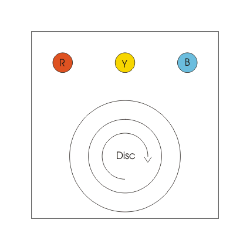
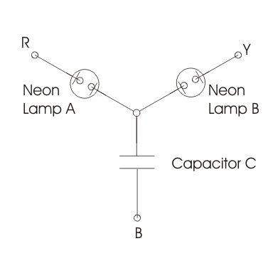

Rotating Type Phase Sequence Indicators
Static Type Phase Sequence Indicators
Phase Sequence Indicator
We have three phase system and by convention we write three phases as RYB. Phase sequence indicator are the indicator that determines the phase sequence of the three phase supply system.
When we give conventional three phase supply (i.e. RYB) to the induction motor, we see that the direction of the rotation of the rotor is in clockwise direction.
Now what will happen to direction of rotation of rotor if the phase sequence is reversed, the answer to this question is that the rotor will rotate in the anticlockwise direction. Thus we see that the direction of rotation of rotor depends on the phase sequence. Let us study how these phase instruments works and on what principle they work.
Now there are two types of phase sequence indicators and they are:
(a) Rotating type
(b) Static type.
Let us discuss one by one each type.
Rotating Type Phase Sequence Indicators
It works on the principle of induction motors. In this coils are connected in star form and the supply is given from three terminal marked as RYB as shown in the figure. When supply is given the coils produces the rotating magnetic field and these rotating magnetic fields produces eddy emf in the movable aluminium disc as shown in the diagram.

These eddy emf produces eddy current on the aluminium disc, eddy currents interact with the rotating magnetic field due this a torque is produced which causes the light aluminium disc to move. If the disc moves in the clockwise direction then chosen sequence is RYB and if the direction of rotation is in anticlockwise the sequence is reversed.
Static Type Phase Sequence Indicators
Given below is the arrangement of static type indicator:

When the phase sequence is RYB then the lamp B will glow brighter than the lamp B and if the phase sequence is reversed then the lamp A will glow brighter than the lamp B. Now let us see how this happens.
Here we assume that the phase sequence is RYB. Let us mark voltages as Vry, Vyb and Vbr as per the diagram. We have

")
")
Here we have assumed balance operation such that we have Vry=Vbr=Vyb=V. Since algebraic sum of all the phase currents is also equal, therefore we can write

On solving the above equations we have ratio of Ir and Iy equals to 0.27.
It implies that the voltage across the lamp A is only 27 percent of that of lamp B. Hence from this we can conclude that the lamp A will glow dimmer in case of RYB phase sequence while in case of reversed phase sequence we have lamp B is dimmer than lamp A.
There is another kind of phase indicator also that works similar to that of the previous one. However here inductor is replaced by the capacitor as shown in the diagram given below.

Two neon lamps are used, along with them two series resistor are also used to limit the electric current and to protect the neon lamp from breakdown voltage. In this indicator if the supply phase sequence is RYB then lamp A will glow and lamp B will not glow and if the reversed sequence is applied then the lamp A will not glow while lamp B will glow.
 by
by